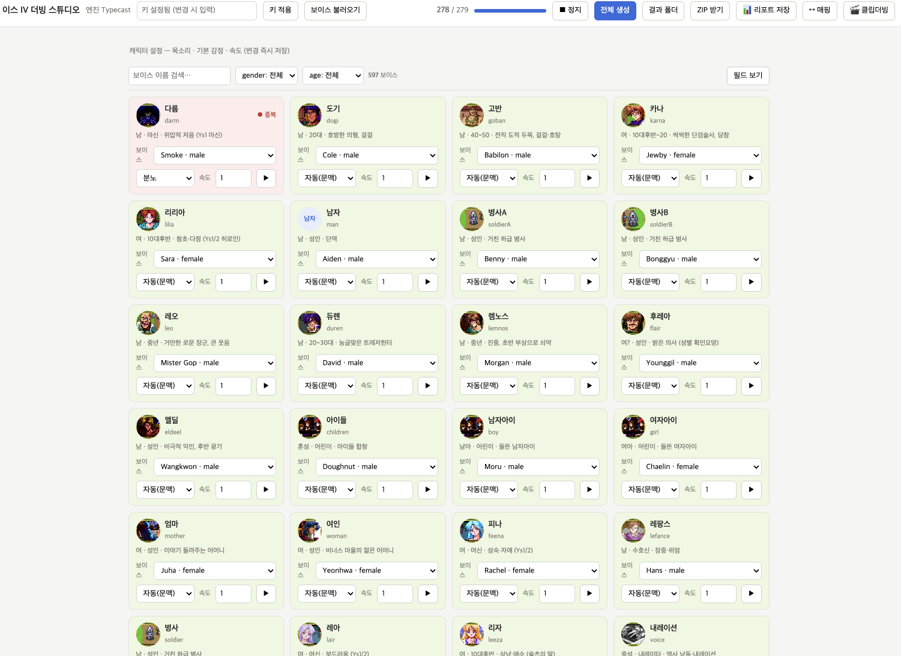
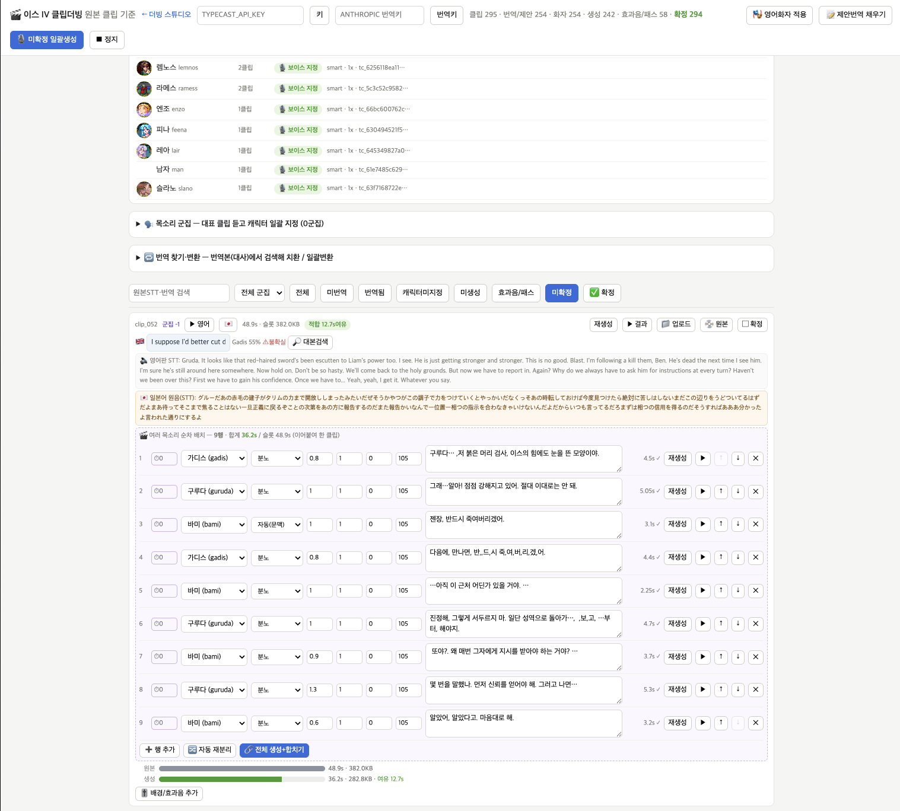
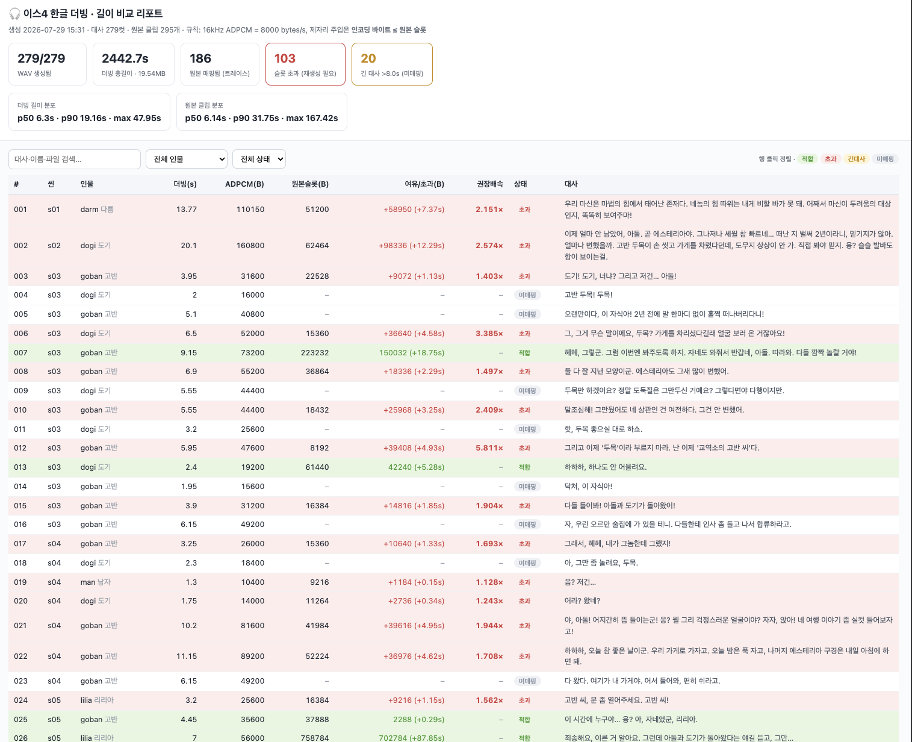
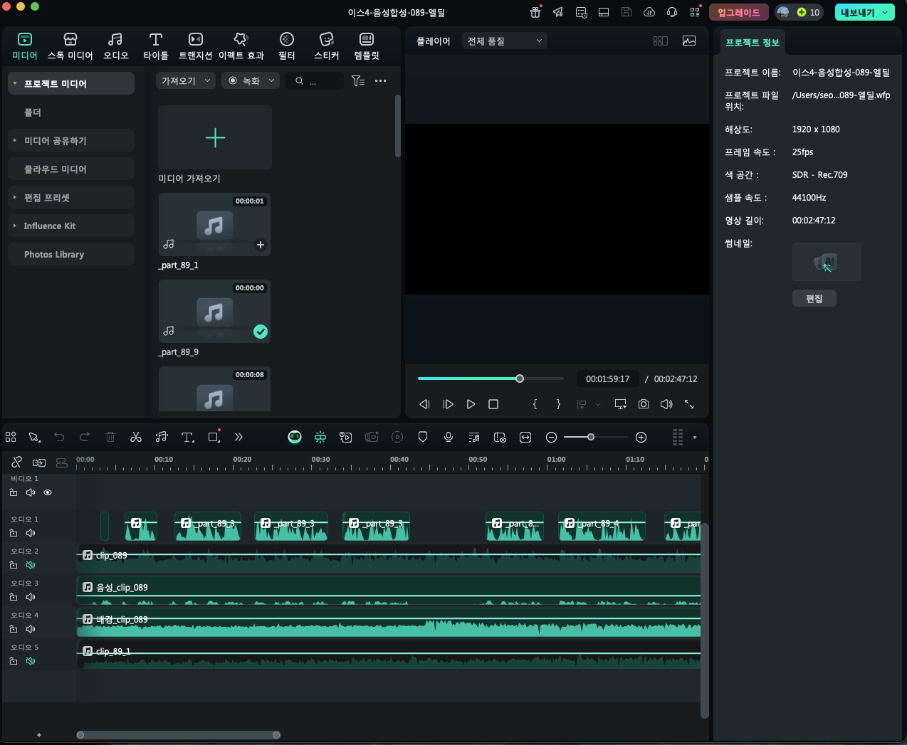
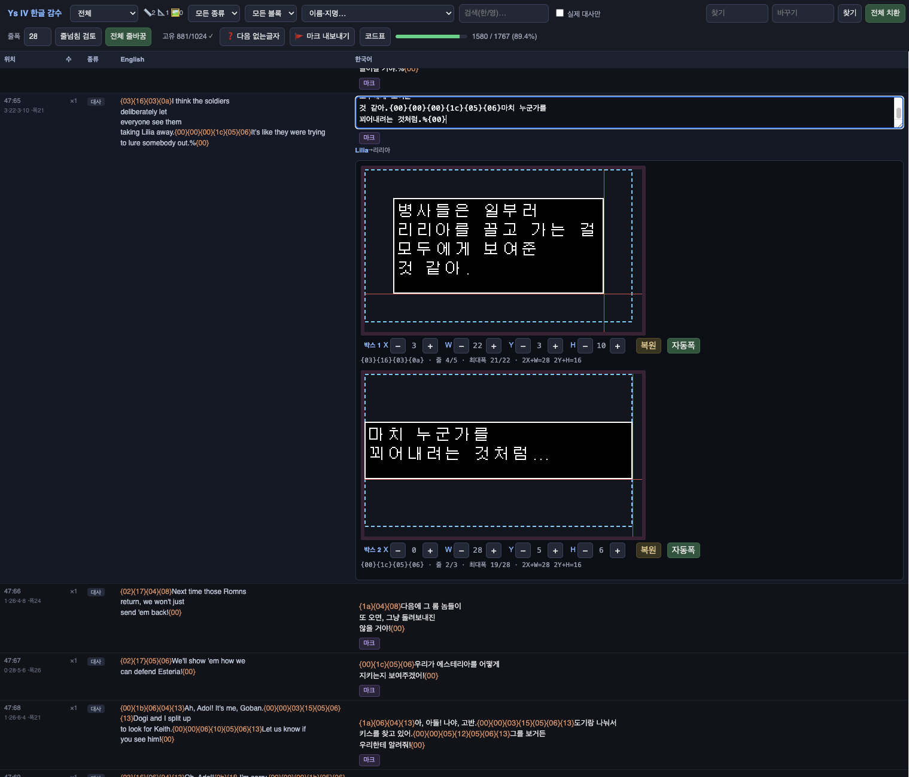
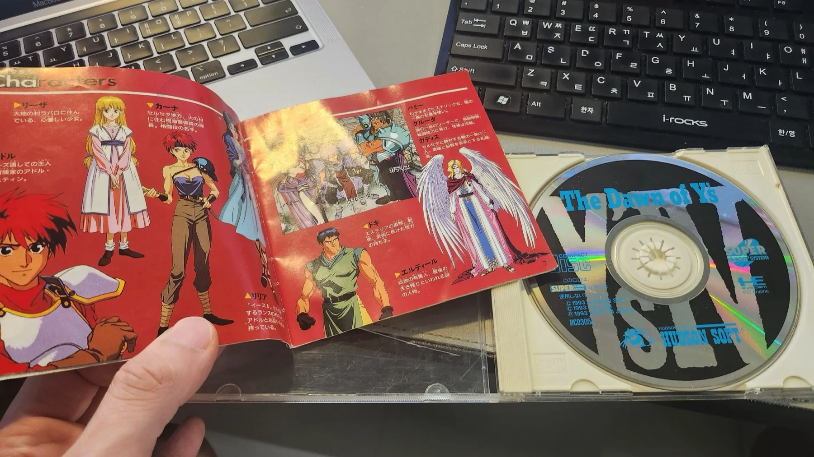

한글 글꼴표는 시스템 카드 안에 있고, 이미지는 글자 번호로 글꼴을 찾습니다.
판올림에서 대사가 늘거나 줄면 번호가 밀립니다 — v0.9.2 에서는 45개가 밀렸습니다.
이미지 패치만 새로 받고 카드를 그대로 두시면
오류 없이 일부 글자가 엉뚱한 글자로 나옵니다. 그 반대도 마찬가지입니다.
위 표의 이미지 패치와 syscard 패치를 둘 다 같은 버전으로 받아 적용해 주세요.
헷갈리시면 웹 패처를 쓰세요 — 이미지와 카드를 한 번에 만들어 드리므로
짝이 어긋날 일이 없습니다.
A 용 패치는 B 에 적용되지 않고, 그 반대도 마찬가지입니다.
원본이 다르기 때문입니다.
v0.9.2
2026년 7월 29일 · 프리징 수정
⚠️ 이미지와 한글 시스템 카드를 반드시 같이 새로 만들어 주세요
되살린 대사 12개가 음절 빈도를 바꾸면서 글자 45개의 내부 번호가 밀렸습니다.
글자 자체는 그대로지만 자리가 달라졌습니다. 이미지는 그 번호로 글자를 찾고,
번호표는 시스템 카드 안에 들어 있습니다.
새 이미지에 옛 카드를 쓰면 오류 없이 45개 글자가 엉뚱한
글자로 나옵니다. 반대도 마찬가지입니다.
웹 패처를 쓰시면 둘을 한 번에 만들어 드리므로 신경 쓰지 않으셔도 됩니다.
xdelta 로 직접 하시는 분만 이미지 패치와 syscard 패치를 둘 다 새로 받으시면 됩니다.
상점에서 물건을 사면 화면이 깨지며 멈추던 문제 — 프로마록 쿠프 교역소.
구매 완료 대사가 통째로 빠져 있었고, 그 자리에 남은 영문 압축 찌꺼기를 게임이
“세로 130칸짜리 대화창”으로 읽어 32칸짜리 창 관리 표를 넘어 자기 작업 메모리를
뭉갰습니다. 파는 것은 그 앞 대사에서 끝나 멀쩡했습니다
같은 원인으로 7개 블록에서 잘려 있던 대사 12개를 되살려 번역 —
레오의 장비 획득 · 로다 열매 획득 · 셀세타 숲 · 엔딩 대사 포함
“구매는 됐는데 영어가 나온다” 도 같은 원인이었습니다 —
번역 목록에 아예 올라오지 않아 감수 화면에도 보이지 않았습니다
대사창 밖으로 글자가 넘쳐 화면이 지저분해지던 곳 정리 —
창 크기 481곳, 문구 147곳
한국어 음성은 v0.9.1 과 동일합니다. 세이브 파일은 그대로 쓰실 수 있습니다.
v0.9.1
2026년 7월 26일 · 중요 수정
v0.9 로 만드신 이미지는 다시 만들어 주세요
패치된 이미지의 섹터 오류정정 데이터(EDC/ECC)를 다시 계산하지 않는 결함이
있었습니다. 이 필드를 검사하는 환경에서 두 가지가 일어납니다.
“sector 3667 오류” 같은 읽기 실패 — 오프닝은 나오는데 본 게임이 시작되지 않습니다
더 조용한 쪽: 일부 섹터가 자동 정정되어 원래 영어로 되돌아갑니다 —
오류 없이 잘 도는데 한글이 안 나옵니다
Mesen 은 이 필드를 보지 않아 정상으로 보였고, 그래서 검증을
통과했습니다. Mednafen · RetroArch(Beetle PCE) · 실기 CD-R 에서 문제가 됩니다.
게임 데이터 자체는 v0.9 와 동일합니다 — 데이터 트랙 해시는 바뀌지 않았습니다.
바뀐 것은 각 섹터의 오류정정 필드뿐입니다.
패치가 건드린 모든 섹터의 EDC/ECC 재계산 — 웹 패처 · 패치 파일 · 빌드 전부
원본 자체에 오류정정 데이터가 없는 립(일본판 덤프 다수)도 정상으로 복구합니다
패치 후 EDC/ECC 검증을 추가 — 이 결함이 다시 배포되지 않습니다
데이터트랙 위치 자동 탐지 — 프리갭 처리가 다른 립도 그대로 패치됩니다
일본어 음성 + 한국어 자막 경로 지원 (웹 패처 · 전용 xdelta)
v0.9
2026년 7월 · 첫 공개 버전
대사 텍스트 한국어화 — 플레이어가 보는 대사 전체
시스템 카드 ROM 글리프 방식 한글 렌더러 — 실기 확인
세이브를 직접 불러올 때 발생하던 대화창 프리즈 수정
엔딩 스태프롤 — 깨진 한자 138자 복구 후 한국어화
한국어 음성 더빙 242클립 + CD 오디오 5트랙 (AI 음성)
순정 시스템 카드로 부팅하면 안내를 띄우는 부트 가드
부팅 시 6초간 제작 계보를 보여주는 인트로 — 아무 버튼이나 누르면 넘어갑니다
알려진 제한
아이템 · 장비 · 지명 · 상태창 헤더는 영문으로 남습니다
음성은 AI로 생성했습니다. 사람 성우가 아닙니다
대사 상자 밖으로 글자가 넘치는 곳이 소수 남아 있을 수 있습니다
파이어폭스 · 사파리에서는 웹 패처가 동작하지 않습니다
왜 v1.0 이 아닌가
기능은 모두 에뮬레이터와 실기에서 확인했습니다. 다만 넓은 환경에서의 플레이 검증이
아직 부족합니다. 실제 사용자들이 겪는 문제가 정리되면 v1.0 으로 올립니다.
버그를 찾으셨다면
글자가 깨지거나, 상자 밖으로 넘치거나, 게임이 멈추는 곳을 알려 주세요.
화면 사진을 함께 올려 주시면 원인을 찾는 시간이 크게 줄어듭니다.
33년에 걸친 다른 사람들의 작업 위에 올라가 있습니다.
게임을 켜면 가장 먼저 보이는 화면이 이 순서인 이유입니다.
Thanks
NightWolve 님과 팀이 2004년에 스크립트를 뽑아내고 폰트 렌더러를 열어 두지 않았다면,
그리고 Burnt Lasagna 님이 2012년에 음성 슬롯의 구조를 밝혀 두지 않았다면
이 한국어 패치는 시작조차 할 수 없었습니다.
If NightWolve and their team had not extracted the script and
opened up the font renderer in 2004, and if Burnt Lasagna had not mapped out the structure of
the voice slots in 2012, this Korean patch could never have begun.
이 숫자는 웹 패처로 패치한 횟수와 패치 파일 내려받기를 센 것입니다.
직접 받아서 오프라인에서 적용하신 분은 잡히지 않으니, 실제 이용자는 이보다 많습니다.
먼저 만들어야 했던 것들
번역을 시작하려면 스크립트를 꺼낼 수 있어야 하고, 한글을 넣으려면 렌더러가 있어야 하고,
음성을 갈아 끼우려면 원본 음성이 어디 있는지부터 알아야 했습니다.
그래서 패치보다 도구를 먼저 만들었습니다.
78도구
29Mesen 진단 스크립트
5UI 도구
3직접 만든 코덱·어셈블러
화면이 있는 것들
번역 감수기
transtool.py · localhost:8765
대사 8천여 줄을 스프레드시트처럼 훑는 웹 UI. 같은 문장은 한 줄로 묶여서 한 번 고치면 나오는 곳 전부에 반영됩니다. 블록·카테고리·용어집으로 걸러 보고, 찾아바꾸기와 박스 폭 미리보기가 들어 있습니다.
더빙 스튜디오
server.py + UI 3종 · localhost:8790
캐릭터마다 목소리를 지정하고, 대사별로 감정과 속도를 따로 조절해 한 번에 생성·시청하는 도구. 그 자리에서 들어보고 마음에 안 들면 다시 뽑습니다. 결과는 PCE 에 넣을 16kHz 모노 WAV.
한글 폰트 에디터
hangul_font.py
881자를 격자 PNG 한 장으로 내보내 손으로 픽셀을 찍고 다시 읽어들이는 왕복 도구. 16×12 글리프라 자동 렌더링만으로는 안 되는 글자가 꽤 있어서, 결국 눈으로 보고 고쳐야 했습니다.
웹 패처
core.mjs + driver.js · 브라우저 전용
이 사이트의 그 패처입니다. 데이터트랙 위치 자동 탐지, EDC/ECC 재계산, 영문 패치(.ppf) 직접 적용, 한글 시스템 카드 생성까지 전부 브라우저 안에서 — 파일이 서버로 가지 않습니다.
음성 패치 GUI
ys4_patcher.py
웹 패처 이전에 만든 데스크톱 패처. 드래그 앤 드롭으로 이미지를 받아 음성 트랙을 갈아 끼웁니다.
음성 레이어 편집기
음악 · 효과음 · 목소리 · 간격
원본은 목소리·BGM·효과음이 한 트랙에 섞여 있어서, 목소리만 걷어내면 갈매기도 파도도 같이 사라집니다. 그래서 직접 만든 음성을 레이어로 등록하고 음악·효과음을 따로 깔아 놓은 뒤, 간격과 화자, 대사를 넣으면 도구가 그 자리에서 합성합니다. 결과가 정해진 슬롯 길이 안에 들어가는지도 바로 확인합니다.
음성 생성기
TypeScript · Typecast API
Typecast 의 API 토큰을 구매해 붙인 TypeScript 생성기. 대사 목록을 넣으면 캐릭터별 목소리로 한 번에 뽑아냅니다. 웹 화면에서 한 줄씩 눌러 받던 일이 일괄 처리가 됐고, 다시 뽑을 때도 같은 설정이 그대로 재현됩니다.
도구로 안 되는 것은 손으로
생성한 음성을 그대로 쓸 수 있는 경우는 거의 없었습니다. 길이가 슬롯에 안 맞고,
원본 클립에는 배경음이 같이 깔려 있고, CD 음악 트랙은 통째로 다시 잡아야 했습니다.
여기서부터는 자동화가 안 됩니다.
음성 직접 편집
Wondershare Filmora
파형을 눈으로 보면서 앞뒤 여백을 자르고, 호흡을 넣고, 길이를 슬롯에 맞추는 작업. 게임의 음성 슬롯은 길이가 정해져 있어서 한 프레임만 넘쳐도 뒤 클립을 밀어냅니다. 결국 하나씩 듣고 손으로 맞췄습니다.
AI 보이스 리무버
UVR5 · Ultimate Vocal Remover
원본 클립에는 목소리와 배경음이 한 트랙에 섞여 있습니다. 그대로 갈아 끼우면 그 장면의 분위기가 통째로 사라집니다. UVR5 로 목소리만 걷어내고 배경음은 남긴 뒤 그 위에 한국어 음성을 올렸습니다.
CD 오디오 트랙 재편집
트랙 7 · 24 · 28 · 29 · 30
이 게임의 긴 연출 장면은 음성이 CD 음악 트랙 안에 통째로 들어 있습니다. 대사만 떼어낼 수가 없어서, 효과음·음악을 살린 채 한국어 음성을 다시 얹어 트랙 하나를 통째로 재편집했습니다. 원래 길이를 한 바이트도 넘기면 안 됩니다.
그 뒤에서 돌아간 것들
대부분 한 번 쓰고 끝나는 도구입니다. 그래도 그때는 이게 없으면 한 발도 못 나갔습니다.
스크립트를 꺼내고 되넣기
도구
하는 일
decompress.py / compress.py
게임의 압축 스크립트를 풀고 다시 압축. 되넣을 수 있어야 번역이 시작됩니다
lz_search.py
압축 포맷을 모르던 시절, 이스케이프 바이트를 고정해 놓고 조합을 훑었습니다
comp_probe.py
블록들의 공통 접두사와 갈라지는 지점을 찍어 포맷을 좁혔습니다
extract_script.py
79개 스크립트 블록에서 번역 대상 문장만 골라냅니다
dump_script_blocks.py
블록 전체를 원본·가독 텍스트 두 벌로 덤프
find_plaintext.py
Mesen RAM 덤프를 뒤져 압축이 풀린 메뉴·상태창 문자열을 찾습니다
make_recompress_poc.py
재압축한 블록이 실기에서 안 멈추는지 먼저 증명
번역 데이터 관리
도구
하는 일
apply_ko_batch.py
번역 묶음을 master.tsv 에 안전하게 반영 (충돌·되돌리기 고려)
apply_translation.py / apply_dialogue.py
매핑 파일에서 번역을 채워 넣기
seed_translation.py
초기 번역 씨앗 넣기
widen_boxes.py
대사 상자 폭을 넓히고 한국어 기준으로 줄바꿈을 다시 계산
폰트와 렌더러
도구
하는 일
make_korean_render.py
881자 전체 렌더 빌드 — 한글화의 본체
reload_cave.py
글리프 재적재 + ADPCM 우회 그리기 루틴 (HuC6280 어셈블리)
plan_2byte_slots.py
2바이트 렌더러의 글자 슬롯 압력 계산
syscard_kanji_map.py
System Card 의 한자 폰트 주소 지도 — BIOS 를 뜯어 복원
font_codec.py / font_dump.py
PCE 1bpp 타일 코덱, 원본 폰트 추출
PoC · 실험 11종
make_2byte / make_hangul / make_render_test / make_reload_poc / make_star_splitbank / make_adwrite_probe / make_capacity_test / make_fontload_test 등 — 본 빌드에 손대기 전에 하나씩 증명한 것들
어셈블리와 리버싱
도구
하는 일
huc6280_dis.py
PC Engine CPU 디스어셈블러. System Card 의 CD_READ 도 이걸로 뜯었습니다
huc_asm.py
짝이 되는 어셈블러 — 라벨 지원, 케이브에 필요한 만큼만
boot_guard.py
순정 카드로 부팅하면 막아서는 가드 + 인트로 스플래시. 2048바이트 안에 전부
staffroll_patch.py
엔딩 스태프롤의 깨진 한자 138자 복구 (ASM 손대지 않고 데이터만)
staffroll_header_patch.py
스태프롤 헤더·배역명·크레딧 페이지 한국어화
에뮬레이터 안을 직접 들여다본 것들 — Mesen 스크립트 창
“실기에서 왜 멈추는가”는 코드를 읽어서는 안 나옵니다. Mesen 의 스크립트 창에
Lua 를 붙여 넣고 게임을 돌리면서, CPU 가 어디를 밟고 어떤 값이 언제 망가지는지
프레임 단위로 찍어야 나옵니다. 이 프로젝트의 어려운 문제는 대부분 여기서 풀렸습니다.
스크립트
무엇을 보려고
trace_shop_freeze.lua
상점 프리징 — 창 할당기가 32칸짜리 표를 넘어 게임이 제 작업 메모리를 뭉개는 순간을 잡았습니다. v0.9.2 의 그 수정
watch_font.lua
상주 한글 폰트를 누가, 언제 덮어쓰는지
watch_cave.lua / watch_cave_restore.lua
케이브(우리가 심은 코드)가 살아 있는지 감시하고, 복원 경로를 추적
trace_renderer.lua
글자를 그리는 루틴을 실행 중인 뱅크째로 붙잡기
trace_decomp.lua
게임이 스크립트를 푸는 과정을 따라가며 압축 포맷을 확정
trace_loader.lua / trace_sceneload.lua
장면이 바뀔 때 CD 에서 무엇을 어디로 읽는지
trace_voice.lua
음성 클립이 디스크 어느 자리에서 오는지
trace_winhook.lua / watch_cave_iceload.lua
“타이틀에서 세이브를 바로 불러오면 멈춘다”의 원인
freeze_autopsy.lua
멈춘 직후의 상태를 통째로 찍어 두는 부검 도구
cheat_search.lua
레트로아크 치트 검색 대용 — PCE 코어가 안 내주는 CD-ROM RAM · 카드 RAM까지 훑습니다
find_free_bank.lua
세 번째 폰트 뱅크로 쓸 빈 자리 찾기
probe_subtitle.lua / probe_part2.lua
자막 방식이 가능한지, 불안정한 폰트 뱅크를 쓸 수 있는지 타진
그 밖에 17종
dump_box · find_item_name · read_watch_music · trace_converter · verify_reload · trace_5189 등 — 대부분 질문 하나에 답하고 버려진 것들
다소 공치사(?)처럼 보실 수도 있겠습니다. 다만 대부분은 틀렸다가
고친 이야기라, 그냥 기록으로 남겨 두는 편이 낫겠다 싶었습니다.
만드는 과정 자체를 즐기시는 분께 읽을거리가 되거나, 비슷한 걸 시도하시는 분께
“여긴 파도 안 나온다”는 표지판이 된다면 좋겠습니다.
1. 첫날 알게 된 것 — 글자가 디스크에 없다
처음 세운 계획은 단순했습니다. 일본판이 이미 2바이트 글자를 쓰고 있으니,
한자 글리프만 한글로 바꿔치기하면 되지 않을까.
그런데 글자가 디스크에 없었습니다
일본판은 글자를 PC Engine 시스템 카드 3.0 안의 한자 ROM 에서 가져옵니다.
디스크를 아무리 뜯어고쳐도 글리프는 하나도 못 바꿉니다.
계획의 전제가 첫날 무너졌습니다.
그래서 영문 패치본을 뜯어봤더니 — 그들은 자기 폰트를 디스크에 실어 놨습니다.
8×12 Courier, 약 1.2 KB. 시스템 카드에 의존하지 않는 자체 글꼴 경로를
이미 만들어 둔 것입니다.
그래서 이 한국어화는 일본판이 아니라 영문 패치본 위에서 시작합니다.
깨끗한 일본판만으로는 이 프로젝트가 성립하지 않습니다. 번역 원문이 영어인 것도
같은 이유입니다 — 일본어가 아니라 영어에서 한국어로 옮겼습니다.
2. 그들이 2004년에 해 놓은 일
2004년, 그들이 한 일
Neill Corlett 님이 이 게임의 압축 해제 코드를 만들고 분석 노트를 남긴 뒤
떠났습니다. 스크립트를 처음으로 뽑아낸 사람입니다.
Dave Shadoff 님이 짝이 되는 압축 코드를 쓰고 폰트를 뚫었습니다.
NightWolve(Nick Livaditis) 님이 전체를 이끌고 스크립트를 편집했습니다.
번역은 Shimarisu(Rachel) 님이 스크립트의 94%를 맡았는데,
PC 가 고장 나 작업물을 통째로 잃었다가 되살려 냈습니다.Deuce(Jeff) 님이 그 위에서 감수하고 남은 문장을 마무리했습니다.
D-boy(Derrick) 님의 폰트 변환 도구가 없었으면 글꼴 작업이 불가능했다고
README 에 적혀 있습니다.
제가 그 위에 설 수 있었던 것은 "스크립트를 어떻게 꺼내고 어떻게 되넣는가"가
이미 증명돼 있었기 때문입니다. 그게 없었다면 이 프로젝트는 시작 자체가 안 됩니다.
그리고 그분들의 궤적이 제 것과 거의 똑같습니다.
2004-08-01 · v0.57
첫 공개. 첫 두 마을만, 대문자 폰트만, 그리고 대사 상자 크기 문제
2004-12-25 · v0.95
소문자 폰트 지원, 줄바꿈 코드 완성, 스크립트 사실상 완료
…저도 대사 상자 크기 문제로 끝까지 고생했습니다. 22년이 지나도
같은 자리에서 막힙니다.
다만 한 가지, 제가 물려받지 못한 것이 있습니다. Dave Shadoff 님이 2004년에
ADPCM 음성을 꺼내고 넣는 도구를 만드셨는데 공개되지 않았습니다. 어디에도 없습니다.
그래서 음성 쪽은 코덱부터 다시 만들어야 했습니다 — 디코더를 먼저 만들고,
소리가 나는 걸 확인한 뒤 인코더를 붙였습니다.
3. 대사를 꺼내는 데만 — 압축을 세 번 틀리게 추측했다
대사는 Hudson 자체 압축으로 들어 있습니다. 2004년에 Neill Corlett 님이 이 알고리즘을
풀어냈지만 그 도구는 어디에도 남아 있지 않았습니다. 다시 만들어야 했습니다.
흔한 LZSS 라고 가정하고 "12비트 위치 + 4비트 길이"의 모든 조합을 대입했습니다 —
바이트 순서, 니블 역할, 링버퍼 초기값, 복사 길이 ±1 … 전부 실패했습니다.
풀다 보면 한 바이트씩 어긋나며 밀렸습니다.
결국 추측을 그만두고 게임에 물어봤습니다. Mesen 으로 트레이스를 떠서
게임 자신의 압축 해제 루틴($3C1A–$3C5C)을 붙잡았습니다.
포맷은 표준이 아니었습니다 — 길이를 담는 바이트의 상·하위 니블을 매치마다 번갈아
쓰고 있었습니다. 그러니 조합을 아무리 돌려도 안 나올 수밖에요.
그런데 이번엔 압축기가 원본보다 컸다
풀 수 있게 되니 이번엔 다시 압축하면 3~6% 커져서 원래 자리에 안 들어갔습니다.
영문 원문을 그대로 다시 압축해도 넘쳤습니다 — 2004년 그들의 압축기가 우리 것보다
좋았던 것입니다.
그래서 가능한 모든 쪼개는 방법 중 가장 짧은 것을
계산하도록 다시 썼습니다. 결과: 모든 블록이 원본보다 작아졌습니다.
덕분에 한국어가 원래 자리에 들어갑니다.
4. 대사가 8 KB 에서 잘려 있었다 — 그리고 이번에도 같은 종류였다
추출 도구에 8,192바이트 상한이 걸려 있었습니다. 긴 블록은 뒤가 통째로
날아갔습니다 — 실제 20,450바이트인 블록이 8 KB 만 나왔습니다.
마칼 촌장도, 카르나 동행 대사도, 전부 없는 줄 알고 있었습니다.
고치고 나서 제대로 잘렸는지 확인할 방법이 필요했는데, 뜻밖의 데서 나왔습니다 —
복원한 블록의 끝이 개발자가 숨겨 둔 장난 문구에 정확히 떨어졌습니다.
거기가 진짜 끝이었습니다.
그리고 이 발견이 엉뚱하게 믿고 있던 것 하나를 깨뜨렸습니다.
그때까지 "블록을 통째로 다시 압축하면 게임이 멈춘다"고 믿고 조심조심 글자만
끼워 넣고 있었는데 — 진짜 원인은 잘린 블록을 다시 압축한 꼬리가
게임이 계속 읽고 있는 자리를 덮은 것이었습니다. 재압축은 죄가 없었습니다.
그리고 v0.9.2 의 상점 프리징도 같은 종류였습니다
이번에 고친 그 버그도 "추출 길이가 실제보다 짧았다" 입니다.
2년 전 같은 자리에서 한 번 물렸는데, 같은 함정이 다른 블록에 남아 있었습니다.
한 번 물린 함정은 전수로 훑어야 합니다 — 그때 그러지 않았습니다.
5. 첫 번째 벽 — 한글 글꼴을 놓을 자리가 없다
영문 패치가 넣은 글자는 아스키 96자, 약 1.2 KB 입니다. 한국어는
881자 × 24바이트 = 약 21 KB. 열일곱 배입니다.
PC Engine CD 의 작업 메모리에서 안전한 곳은 뱅크 $87 한 칸(8 KB, 글자 340자쯤)뿐
이었습니다. 나머지 $85·$86 은 넓은 지역에 들어가면
게임이 장면을 다시 그리면서 그대로 덮어씁니다. 폰트가 그 자리에 있으면
아리에다 같은 넓은 마을에 들어가는 순간 글자가 깨집니다.
6. 음성용 메모리를 빌려 쓰다 — 그리고 음성과 부딪히다
그래서 다른 자리를 찾다가 알게 된 것이 있습니다.
이 게임은 원래 글꼴을 ADPCM RAM 에 올려 둡니다.
(0x282–0x7FFF 구간. 음성 데이터는 그 위 0x8000 부터.)
글꼴과 음성이 같은 칩을 나눠 쓰고, $80–$85 는 CD·음성
스트리밍 버퍼입니다.
여기에 한글을 올릴 수 있을까 재어 봤습니다. 결과는 —
측정 결과
미리 적재된 폰트 영역에서 연속으로 비어 있는 가장 긴 구간 = 386바이트.
필요한 것은 12.8 KB. 상주는 불가능.
남은 방법은 글자를 쓸 때마다 그때그때 실어 나르는 것(AD_WRITE 재적재)
이었는데, 이건 음성·CD 스트리밍이 쓰는 바로 그 통로입니다. 그리고
장면이 바뀔 때마다 16 KB 폰트를 CD 에서 다시 읽으니 배경음악이 끊겼습니다.
글자를 살리면 소리가 죽고, 소리를 살리면 글자가 깨졌습니다.
7. 방향 전환 — 일본판이 이미 답을 갖고 있었다
막혀서 원본을 다시 들여다보다 알아챘습니다. 일본판은 한자를 어디서 가져오는가?
시스템 카드 3.0 안에 들어 있는 한자 ROM 이었습니다. 카드 256 KB 중
약 160 KB 가 JIS 한자 글꼴입니다. 일본판은 애초에 이 벽에 부딪힐 일이 없었습니다 —
글꼴이 RAM 이 아니라 ROM 에 있으니까요.
그래서 이렇게 했습니다
한국어에는 시스템 카드 글꼴이 없습니다. 그러면 만들면 됩니다.
쓰이지 않는 한자 영역에 한글을 심고, 렌더러가 ROM 에서 글자를 읽도록 고쳤습니다.
ROM 은 덮어써지지 않습니다. 재적재가 필요 없고,
$85·$86 충돌이 없고, 스프라이트·음악을 건드리지 않고,
넓은 지역이든 어디든 모든 글자가 나옵니다. 위 문제들이 한 번에 사라졌습니다.
2026-06-29, 실험이 통과했습니다. 아리에다(글자가 깨지던 그 마을)에 걸어 들어가서
ROM 에서 읽는 글자만 멀쩡하고 RAM 에 남겨 둔 대조군만 깨지는 것을 확인했습니다.
같은 장면, 같은 조건이니 ROM 말고는 설명이 안 됩니다.
이왕 만드는 김에 이 게임 전용이 아니라 공용으로 만들었습니다.
현대 한글 11,172자는 262 KB 라 안 들어가지만, KS X 1001 완성형 2,350자는 약 55 KB
로 넉넉히 들어갑니다. 그래서 나온 것이 PCE 한글 시스템 카드 —
글자 위치를 문서로 고정해 둔, 다른 PC Engine CD 게임의 한국어화도 그대로 쓸 수 있는
카드입니다. 이스 IV 는 그 카드의 첫 사례이고, 실기 검증까지 마친 첫 사례이기도 합니다.
카드 자체(.pce)는 배포하지 않습니다 — BIOS 저작권 때문입니다.
여러분의 순정 카드로부터 만들어 드리는 방식만 제공합니다.
8. 카드에는 건드리면 안 되는 곳이 있다
카드에 코드를 조금 넣어야 할 일이 생겼습니다. 비어 보이는 높은 뱅크
$1E·$1F 에 넣었습니다. 결과는 —
모든 디스크가 “LOAD ERROR!”
카드는 부팅되고 VER 3.0 / PUSH RUN 까지 뜨는데, 그다음 CD 를 못 읽습니다.
이스 IV 만이 아니라 아무 게임이나 다.
처음엔 "그 뱅크가 확장 BIOS 코드라서"라고 결론 냈는데, 나중에 다시 파 보니
그것도 정확하지 않았습니다. 그쪽에는 살아 있는 12×12 한자 글꼴이 있고,
진짜 원인은 카드 끝에 있는 디스크 저작권 문자열일 가능성이 큽니다 —
BIOS 가 부팅할 때 그 문자열을 디스크의 첫 섹터와 대조합니다.
한 글자만 어긋나도 "이건 정품 디스크가 아니다"가 됩니다.
원인 설명은 바뀌었지만 규칙은 그대로입니다 —
덮어써도 되는 곳은 한자 글꼴 영역 $0A–$14 뿐.
지금은 글꼴 뒤에 남는 7 KB 짜리 꼬리에 넣고, 만든 카드가
나머지 영역만큼은 순정과 한 바이트도 다르지 않은지 매번 대조합니다.
"이유를 알아냈다"와 "규칙을 알아냈다"는 다릅니다.
규칙이 맞으면 이유가 틀려도 당장은 굴러가지만, 기록에는 둘 다 남겨야
나중에 이유를 고칠 수 있습니다.
9. 스프라이트가 대사창 위로 올라오다 — 고친 자리가 문제였다
타이틀에서 세이브를 바로 불러오면 대화창에서 멈추는 버그가 있었습니다.
본체 BIOS 가 세이브를 읽으면서 우리 코드가 있는 $87 을 덮어쓰는 것이었습니다.
그래서 "망가졌으면 카드에서 다시 복사해 오는" 검사를 넣었는데 —
장면 적재 지점($5ABF)에 걸었더니 스프라이트가 집·나무·대사창 위로 올라왔습니다
글자 하나하나 그리는 자리로 옮겼더니 이번에도 스프라이트가 깨졌습니다.
검사 자체는 열 몇 개 명령어인데, 그게 글자 렌더링의 타이밍을 밀어 우선순위가 뒤집혔습니다
정답은 대화창을 새로 여는 순간(페이지당 한 번)이었습니다. 글자 그리는 경로는
원본과 한 바이트도 다르지 않게 두고, 페이지 시작에서만 한 번 확인합니다.
2026-07-01, 얼지도 않고 깨지지도 않고 스프라이트도 정상임을 확인했습니다.
이 과정에서 또 하나 배웠습니다 — 세이브를 바로 불러올 때
망가지는 자리가 세이브마다 다릅니다. 어떤 세이브는 코드가, 어떤 세이브는
글자 번호표가 날아갑니다. 그래서 둘 다 확인합니다. 하나만 보다가 한 번 놓쳤습니다.
10. 음성 대신 자막으로 가려다 접은 이야기
먼저 이 게임이 어떤 게임인지부터 말씀드려야 합니다.
이스 IV 는 이야기의 중요한 대목이 음성으로 지나갑니다.
연출 장면에는 일본어 음성만 있고 글자가 없습니다 — 자막도, 대사창도 없습니다.
그러니 텍스트만 번역해서는 이야기가 이어지지 않습니다.
무슨 일이 왜 일어났는지가 그 음성 안에 들어 있는데, 번역을 해 놔도
그 대목만 통째로 비어 버립니다.텍스트만 옮기면 반쪽짜리라는 뜻입니다.
이 프로젝트에서 음성을 포기할 수 없었던 이유가 그것입니다.
사실은 — 저부터가 이 게임의 이야기를 모릅니다
고백하자면, 저도 이 게임을 내용을 알고 끝까지 해 본 적이 한 번도 없습니다.
일본어 음성이 무슨 말인지 모르는 채로 화면만 보고 지나갔습니다.
30년이 넘도록 그랬습니다.
이 프로젝트의 처음 동기가 정확히 그것이었습니다 —
“AI 를 쓸 수 있는 시대가 됐으니, 한글판을 직접 만들어서 내가 즐기자.”
누구에게 주려고 시작한 게 아니라 제가 이 이야기를 이해하고 싶어서 시작했습니다.
그래서 처음부터 음성이 목표였는데, 더빙은 큰일이라
자막을 얹는 쪽을 먼저 재어 봤습니다.
음성이 시작되는 순간을 잡아 화면 상태를 통째로 찍는 도구
(probe_subtitle.lua)를 만들어 실제 컷신에서 돌렸습니다. 나온 것은 —
spritesEnabled = false
연출 장면에서는 스프라이트가 꺼져 있습니다 — 자막을 스프라이트로 얹는 길이 막힙니다
배경 레이어
컷신 그림이 화면을 채우고 있어 글자를 올릴 빈 칸이 없습니다
음성 = 카드 BIOS
클립마다 CD_READ → AD_TRANS → 재생. 줄 단위로 후킹은 되지만, 자막을 그리려면 그리기 경로를 새로 만들어야 합니다
못 할 일은 아니었지만 대사 렌더러를 하나 더 만드는 일이었고, 같은 노력이면
음성을 바꾸는 쪽이 결과가 낫다고 판단했습니다. 그래서 자막 대신 더빙으로 갔습니다.
자막 버전 브랜치는 지금도 별도 폴더에 남아 있습니다 — 버리지는 않았습니다.
그런데 — 왜 PC Engine 게임은 음성이 나올 때 자막이 없을까?
작업하면서 계속 걸렸던 질문입니다. 이 시절 CD 게임들은 목소리는 나오는데
글자는 안 나옵니다. 성우를 쓸 돈은 있었는데 자막 한 줄이 없습니다.
이 게임을 뜯어 보고 나서 든 생각은 — 메모리가 없어서였다 입니다.
순서대로 보면 이렇습니다.
본체 메인 메모리가 빠듯합니다. 그래서 ADPCM 메모리까지 끌어다 씁니다 —
효과음은 대부분 FM 음원이 내니까, ADPCM 쪽은 평소에 놀고 있는 공간입니다
그래서 음성이 없는 동안 그 자리에는 글꼴이 올라가 있습니다.
이 게임이 실제로 그렇습니다
그런데 음성이 본격적으로 나오기 시작하면 그 자리를 음성이 가져갑니다.
글꼴이 있을 데가 없어집니다
글꼴이 없으면 글자를 못 그립니다 →
음성이 나오는 동안에는 자막을 올릴 메모리 여유가 없습니다
제가 실제로 겪은 것이 정확히 그것이었습니다.
글자를 그때그때 실어 나르는 방식으로 만들었더니 —
효과음이 울릴 때
메시지의 첫 글자만 쓰레기 덩어리로 나왔습니다
음성 대사가 나올 때
메시지가 통째로 같은 글자 하나 또는 흰 블록으로 뭉개졌습니다
그러니까 "자막을 안 넣은" 게 아니라 "넣을 자리가 없었던" 쪽에 가깝습니다.
하나를 얻으려면 하나를 내놓아야 하는 하드웨어였고, 음성을 택한 순간
글꼴이 앉아 있던 자리를 비워 줘야 했습니다.
"음성이 나올 땐 글자를 포기한다" — 주어진 판에서 고를 수 있는
답이 그것뿐이었을 겁니다.
지금 기준으로 보면 거칠지만,
그 시절 하드웨어에서는 이런 상남자식 해결이 정답이었습니다.
남는 게 없으니 뭘 얹는 게 아니라 뭘 뺄지를 고르는 것이 설계였습니다.
⚠️ 다만 이건 이 게임 이야기입니다. 제가 뜯어 본 것은
이스 IV 한 편뿐이고, 다른 게임이 어땠는지는 모릅니다.
아시는 분 계시면 알려 주세요.
11. 더빙으로 갔더니 — 자동화가 네 번 부러졌다
"음성을 한국어로 바꾸자"는 쉬워 보였습니다. 요즘은 도구가 다 있으니까요.
네 번 시도했고 네 번 다 못 쓸 물건이 나왔습니다.
시도
왜 못 썼나
목소리 페르소나 학습 + 자동 음성 번역
오역이 80% 를 넘었습니다. 목소리는 그럴듯한데 대사 내용이 전달되지 않습니다. 게임 번역에서는 치명적입니다
STT → TTS 로 한 번에 흘리기
누가 말하는지 모릅니다. 감정도 안 실리고, 원래 음성 길이와 대사 사이 간격도 못 맞춥니다 — 슬롯 길이가 정해진 게임에서는 그대로 깨집니다
배경음악·효과음이 깔린 음성
자동 번역으로는 해결이 안 됩니다. 목소리만 갈아 끼우려면 깨끗한 BGM 을 따로 확보해야 하고, 효과음도 구해야 하고, 그 효과음이 들어갈 타이밍까지 다시 맞춰야 합니다
여러 명이 섞여 말하는 장면
STT 가 화자를 갈라내지 못합니다. 대화가 통째로 한 덩어리로 나옵니다
그래서 자동화를 앞이 아니라 뒤에 두기로 했습니다.
먼저 캐릭터별 목소리를 사람이 미리 정해 둡니다 — 여기까지는 자동이 아닙니다
그 매핑을 바탕으로 음성을 STT 로 받아 적으면서 화자를 자동으로 붙이는 도구를 만들었습니다
그다음부터가 자동입니다 — 캐릭터 목소리로 일괄 생성, 길이 검사, 슬롯 주입

1단계 — 사람이 정하는 부분. 인물마다 목소리·기본 감정·속도를 손으로
지정합니다. 다름은 “위압적 저음”, 리리아는 “청초·다정”, 레오는 “거만한 로몬 장군, 큰 웃음” …
597개 후보 목소리에서 골라 그 자리에서 들어 보고 정합니다.
이 표가 있어야 뒤가 전부 자동이 됩니다.

2단계 — 여러 명이 섞인 클립. 원본 음성을 STT 로 받아 적고(영어·일본어
양쪽), 화자를 자동으로 갈라 줄 단위로 늘어놓습니다. 각 줄마다 화자·감정·속도·간격을
따로 잡고 전체 생성+합치기. 아래 막대가 핵심입니다 —
원본 48.9초 / 생성 36.2초 / 여유 12.7초. 이 여유가 마이너스가 되면
뒤 클립을 밀어내므로 들어갈 수 없습니다. 배경/효과음 추가도 여기서 합니다.
그런데 "들어가는가"를 눈으로 세고 있을 수는 없었습니다.
음성은 원본 클립이 차지하던 자리에 그대로 덮어써야 합니다 —
16kHz ADPCM = 초당 8,000바이트, 조건은 하나,
인코딩한 바이트가 원본 슬롯보다 크면 안 된다.
한 개라도 넘치면 뒤가 전부 밀립니다. 그래서 길이 비교 리포트를 만들었습니다.

전수 검사 — 279컷을 한 장에. 대사마다 더빙 길이 · 인코딩 바이트 ·
원본 슬롯 · 남거나 넘친 양을 계산해 적합 / 초과 / 미매핑으로 색을 칠합니다.
이 회차는 103건이 슬롯 초과라 다시 뽑아야 했습니다.
제일 쓸모 있었던 건 권장배속 칸입니다 — “이 대사는 2.151배로 말해야 들어간다”를
계산해 주니, 어디를 줄이고 어디를 다시 쓸지 바로 정할 수 있었습니다.
처음에는 따로 돌려서 보는 리포트였습니다. 생성하고 → 리포트 돌리고 →
넘친 것 골라내고 → 다시 생성하는 왕복이 번거로워서 결국 더빙 스튜디오 안에
붙였습니다. 지금은 만드는 그 화면에서 여유가 몇 초 남았는지 바로 보입니다 —
위 클립더빙 화면 아래쪽의 원본 48.9s / 생성 36.2s / 여유 12.7s 막대가 그것입니다.
그리고 위 표의 3·4번은 자동화로 끝나지 않습니다. 목소리를 새로 만들어 놓아도,
그 목소리가 놓일 장면 자체를 다시 지어야 합니다.
한 장면을 되살리려면 이만큼이 필요합니다
오프닝을 예로 들면 — 갈매기 소리, 파도 소리, 리리아가 문을 두드리는 소리,
엘딜이 구슬을 깨뜨리는 소리. 원본에서는 이 모두가 목소리와 한 트랙에
섞여 있습니다. 목소리만 걷어내면 이 소리들도 같이 사라집니다.
그래서 깨끗한 BGM 을 따로 확보하고,
효과음을 하나하나 구하거나 만들고, 그것들이 들어갈 타이밍을 다시 맞춰야
원래 장면이 됩니다. 자동으로는 어느 단계도 안 됩니다.
결론은 둘 중 하나였습니다 — 이런 트랙은 무조건 직접 편집하거나,
아니면 그 편집을 도구 안에서 할 수 있게 만들거나.
그래서 음성 레이어 편집 도구를 만들었습니다.
직접 만든 음성을 레이어로 등록합니다 — 음악 · 효과음 · 목소리를
각각 다른 층에 깔아 놓고 따로 조정합니다
간격과 화자, 대사를 넣으면 도구가 그 자리에서 합성합니다.
들어보고 아니면 그 자리에서 고칩니다
한국어는 같은 뜻이라도 길이가 달라서, 원래 타이밍 그대로 두면
인물이 말을 겹쳐 하거나 어색하게 비어 버립니다 — 간격을 다시 잡는 이유입니다
맞춰 놓은 결과가 정해진 슬롯 길이 안에 들어가는지 그 자리에서 확인합니다 —
한 프레임만 넘쳐도 뒤 클립을 밀어냅니다

3단계 — 결국 손으로. 도구로 안 되는 장면은 필모라에 트랙을 쌓아
직접 맞춥니다. 화면의 오디오 1~5 가 각각 조각난 대사 · 원본 클립 · 새 음성 ·
배경음 · 효과음 입니다. 파형을 보며 한 줄씩 밀고 당겨 말이 겹치지 않게, 빈 데가
생기지 않게 맞춥니다. 이 한 장면(2분 47초)에 트랙 다섯 겹이 들어갔습니다.
여기서부터는 자동화가 아니라 편집입니다.
그리고 마지막 벽이 하나 더 있었습니다. 엔진을 여럿 재어 보고
결국 타입캐스트로 정했습니다. 한국어 감정 표현이 가장 나았습니다.
그런데 막상 대사를 넣기 시작하니 다른 문제가 나왔습니다 —
게임 음성의 상당수가 '말'이 아니라는 것입니다.
TTS 는 “에잇!” 을 못 합니다
에잇! · 하하하 · 어이샤!! · 끄아아아아악
TTS 는 문장을 읽는 도구입니다.
기합, 웃음, 비명, 숨소리, 그리고 말과 말 사이의 뜸 — 이런 건
글자로 적어 넣는다고 나오지 않습니다.
“끄아아아아악”을 넣으면 “끄아아아아악”이라고 또박또박 읽습니다.
어떻게든 맞춰 보려고 했습니다. 감정 값을 바꾸고, 속도를 바꾸고,
글자를 늘였다 줄였다 하고, 쉼표와 말줄임표를 넣었다 뺐다 하고.
닷새를 거의 밤새웠습니다.
그 사이에 데모를 하나 올렸습니다. 이 방향이 맞는지 확인받고 싶었습니다.
음성 퀄리티에 대한 비판이 달렸습니다.
틀린 말은 아니었습니다. 저도 알고 있었으니까요.
다만 그때는 이미 닷새를 갈아 넣은 뒤였고, 거기서 김이 빠졌습니다.
음성은 통째로 접고 텍스트만 내보낼까 — 꽤 진지하게 그 생각을 했습니다.
이 프로젝트에서 음성을 넣는 일이 기술적으로도, 마음으로도
제일 힘든 구간이었습니다.
그러다 포기했습니다. 정확히는 — 프로젝트를 접은 게 아니라
‘제대로 된 연기’를 포기했습니다.
“병맛 더빙이라도 그냥 가자. 이것도 재미다.”
이렇게 정하고 나니 오히려 진도가 나갔습니다. 완벽한 연기를 포기한 대신
전달에 집중했습니다 — 무슨 말을 하는지 알아들을 수 있으면 된다.
그렇게 마음을 놓고도 며칠이 더 걸렸습니다.
여담 — 잠깐 직접 녹음할까 했습니다
등장인물 중 도기는 톤이 제 목소리와 비슷해 보이더군요.
“이 정도면 내가 그냥 해도 되지 않나?” 싶어서 꽤 진지하게 고민했습니다. ㅎㅎ
…접었습니다.
AI 더빙보다 제 발연기 흑역사에 제가 더 상처받을 것 같아서요.
정직하게 — 그래서 남은 흠
화자를 자동으로 붙이다 보니, 중간중간 목소리가 인물과 안 맞는 곳이 있습니다.
여러 명이 섞이는 장면에서 특히 그렇습니다. 알고 있고, 고쳐 나가고 있습니다.
들으시다 이상한 곳이 있으면 버그 신고 탭으로 알려 주세요.
음성은 AI 로 생성했습니다. 사람 성우가 아닙니다.
12. 대사창 크기를 정하는 값이 어디에도 적혀 있지 않았다
한국어는 한 글자가 영문 두 칸을 먹습니다. 그러니 같은 뜻을 옮겨도 대사가
창 밖으로 넘칩니다. 창을 키우면 되는데 — 창 크기를 정하는 값이 무엇인지
아무 데도 적혀 있지 않았습니다.
대사 앞에 붙은 4바이트가 수상하긴 했습니다. 처음엔 그걸
"화자 · 초상화 · 알파 · 베타"로 읽고 있었습니다. 틀렸습니다.
그래서 게임 안에서 값을 하나씩 바꿔 가며 눈으로 확인했습니다 —
두 번째 바이트를 줄이니 창이 좁아졌고, 네 번째를 04→06
하니 줄이 하나 늘었습니다. 그렇게 정체가 나왔습니다.
byte 0 = X
창의 왼쪽 열 위치
byte 1 = W
창의 폭 (열 수)
byte 2 = Y
창의 위쪽 행 위치
byte 3 = H
창의 높이 (행 수)
확인은 전수 검사로 했습니다. 9,926 페이지를 훑었더니 98%가
2X+W = 28, 2Y+H = 16 이었습니다 —
원본이 창을 화면 가운데에 맞추고 있었던 것입니다. 화면의 글자 영역이
28열 × 16행이라는 것도 이때 같이 나왔습니다.
그리고 여기에 함정이 하나 더
W 의 단위가 영문 열 기준입니다. 한글은 한 글자에 두 칸이니
같은 W 라도 들어가는 글자 수가 절반입니다. 지금까지 났던 오버플로는
전부 "줄바꿈 폭 > 창 폭" 이었습니다.
이 값들은 데이터에만 들어 있어서 어셈블리를 안 건드려도 됩니다.
코드를 손대는 순간 프리즈·스프라이트 위험이 따라오는데, 창 크기는 그 위험 없이
고칠 수 있다는 뜻입니다.
규칙을 알았으니 계산기를 만들면 되겠다고 생각했습니다.
글자 수를 세서 필요한 폭을 구하고, 가운데 정렬 공식에 맞춰
X · W · Y · H 를 다시 계산하는 도구를 짜서
대화 박스 1,364개에 한 번에 먹였습니다.
그리고 특정 장면에서 화면이 난리가 났습니다
하나씩 뜯어보고 나서야 알았습니다. 박스 크기가 계산대로 맞아도,
글자가 화면 밖으로 넘어가는 순간 그리기가 멈추지 않습니다.
그대로 비디오 버퍼를 덮어씁니다.
배경이든 창틀이든 가리지 않습니다.
그 자리에 글자 조각이나 박스 선이 얹힌 채로 그대로 남습니다.
게임이 그 부분을 다시 그리기 전까지는 안 지워집니다.
대사 한 줄이 넘쳤을 뿐인데 화면이 통째로 지저분해지는 참사가 납니다.
그러니 화면만 보고는 못 찾습니다 —
깨진 자리와 원인이 다른 곳이니까요.
결국 전부 되돌렸습니다. 롤백하고, 번역을 새로 하고,
게임을 직접 하면서 넘치는 곳을 하나하나 찾았습니다.
자동으로 다 처리하려던 게 무리수였습니다.
그렇게 찾아 다니면서 박스 규칙을 정리했고, 그 규칙을 화면에 그려 주는
위지윅 도구를 만들었습니다. 그러고 나서야 보이는 대로 고칠 수
있게 됐습니다.

한글 감수 — 대사창 위지윅 편집. 실제 게임과 같은 격자에 지금 대사를
그려 보여 주고, X · W · Y · H 를 +/− 로 바꾸면 그 자리에서 다시 그립니다.
아래에 2X+W · 2Y+H 를 같이 띄워서 가운데 정렬이 깨졌는지,
줄 4/5 · 최대폭 21/22 로 넘치는지 바로 압니다.
이번 판올림의 창 크기 481곳이 이 화면에서 나왔습니다.
규칙을 안다고 자동화가 되는 것은 아니었습니다.
계산은 맞았는데 하드웨어가 그 바깥을 봐주지 않았습니다.
지금도 박스는 한 번에 한 곳씩 봅니다 — 다만 이제는 눈으로 보면서 합니다.
13. 글자 순서가 두 번 발목을 잡았다
한글 글꼴은 많이 쓰는 글자부터 순서대로 굽습니다. 자주 나오는 글자를
짧은 코드로 넣어야 대사가 원래 자리에 들어가기 때문입니다. 그런데 번역을 고치면
그 순서가 바뀝니다. 이게 두 번 물었습니다.
2026년 6월 — 무기점에서 얼어붙다. 번역을 다듬다 보니 어떤 글자가
16번 자리로 옮겨 갔는데, 그 자리의 코드값이 하필 게임 엔진이
제어 명령으로 쓰는 값과 같았습니다. 엔진은 그걸 "글꼴을 바꿔라"로 읽고,
없는 글꼴로 바꾸려다 멈췄습니다. 우리 블록에 그 값이 39개, 영문판엔 0개.
이후로 그 값은 영구 금지입니다
2026년 7월(이번 판올림) — 카드와 이미지의 짝이 어긋나다. 대사 12개를 되살렸더니
빈도가 달라져 글자 45개의 번호가 밀렸습니다. 글자는 그대로인데 자리만 바뀐 것이라
오류가 안 뜨고 조용히 틀린 글자가 나옵니다.
그래서 이번엔 카드도 함께 새로 배포합니다
같은 뿌리에서 두 번 나왔으니 세 번째도 나올 겁니다.
지금은 판올림마다 글자 순서가 바뀌었는지 빌드 직후에 기계로 대조합니다.
14. 그리고 제가 실제로 잘못 내보낸 것 두 가지
이건 변명 없이 적어 둡니다.
v0.9 — 오류정정 데이터를 안 고쳤습니다. 내용만 바꾸고 CD 섹터 뒤에 붙는
288바이트를 그대로 뒀습니다. Mesen 은 이 필드를 안 봐서 제 검증은 전부 통과했고,
실기와 다른 에뮬레이터에서만 터졌습니다. "sector 3667 오류"가 이것입니다.
더 고약한 쪽은 조용히 영어로 되돌아간 경우였습니다
v0.9.1 까지 — 대사 12개가 통째로 빠져 있었습니다. 스크립트를 뽑는 도구가
블록 끝을 잘라먹고 있었고, 그 자리에 남은 옛 데이터를 게임이
“세로 130칸짜리 대화창”으로 읽어 자기 메모리를 뭉갰습니다.
상점에서 물건을 사면 멈추던 그 문제입니다
공통점이 있습니다. 둘 다 "검증은 통과하는데 결과가 틀린" 종류였습니다.
그래서 지금은 패치가 끝날 때마다 오류정정 데이터를 실제로 검사하고,
되살린 대사가 이미지 안에 정말 들어갔는지 빌드마다 확인합니다.
15. 마지막으로 — 실기에서 돌았습니다
2026-06-30, Turbo EverDrive + 실제 PC Engine 에서
개조한 시스템 카드와 구운 CD-R 로 돌아가는 것을 확인했습니다.
에뮬레이터가 아니라 진짜 칩 위에서입니다.
이걸로 남아 있던 큰 물음표가 전부 지워졌습니다 — 개조한 카드가 실기에서 부팅되는가,
렌더러가 카드 ROM 을 실시간으로 읽을 수 있는가, 한글이 실제로 화면에 나오는가.
전부 예였습니다.

돌릴 기계는 진작에 사라졌습니다. 20년 넘게 꺼낼 일도, 꺼낼 이유도
없던 디스크를 이번에 다시 열었습니다. 그런데 아직 읽힙니다.
1993년 Hudson Soft, HCD3051 — 이 패치가 나온 원본이 이 한 장입니다.
설명서를 펴면 이번에 번역한 이름들이 그대로 있습니다.
리자 · 카나 · 리리아 · 도기 · 바미 · 구루다 · 가디스 · 엘딜 —
30년 넘게 저 사람들이 무슨 말을 하는지 모른 채로 봤습니다.
이제 읽을 수 있습니다.
그 확인을 해 주신 분들
저에게는 원본 CD 만 있고 실기가 없습니다. 그런데 MSX천국동의
마리오동키콩 님과 yanwenli 님이 빛의 속도로 돌려 보고
결과를 보내 주셨습니다. 개발 초반이었고, 그때는
"이 방식이 실기에서 되기는 하는가" 가 전부 미지수였습니다.
되는지 안 되는지 모르는 채로 몇 주를 더 갈 수도 있었는데,
두 분 덕분에 그 자리에서 답이 나왔고 탄력을 받았습니다.
이 방향으로 끝까지 갈 수 있었던 건 그 확인 덕분입니다.
이 자리를 빌어 다시 한번 감사드립니다.
그리고 v0.9 이후 실기 및 FPGA 등에서
동작을 애정 깊은(?) 느낌으로 손수 보여 주신
painkilla 님, 마이콜 님께도 감사드립니다.
여담 — 제 이름 하나 넣으려다, 진짜 제작진의 이름을 지울 뻔했습니다
솔직히 말하면 고생했으니 스태프롤에 제 이름 정도는 넣고 싶었습니다.
그런데 이게 도의적으로도 법적으로도 괜찮은 일인가 싶어 한참 망설였습니다.
남이 만든 게임에 제 이름을 얹는 것이니까요.
찾아보니 한글화하시는 분들 사이에 그런 문화가 있더군요.
원작 크레딧은 건드리지 않고 뒤에 조용히 한 줄 붙이는 식으로요.
그래서 저도 인트로와 엔딩 스태프롤 맨 끝에 자연스럽게 끼워 넣기로 했습니다.
그러려면 엔딩을 봐야 했습니다. 그래서 봤는데 —
원작 스태프 이름이 전부 깨져 있었습니다
한글 글꼴을 넣느라 시스템 카드의 한자 ROM 을 덮어썼는데,
엔딩 스태프롤이 하필 그 한자를 쓰고 있었습니다.
1993년에 이 게임을 만든 사람들의 이름이 제 손에 뭉개져 있었습니다.
영상 준비 중
그 시절 빌드로 엔딩까지 가신 분이 올려 두신 영상입니다.
4분 43초부터 스태프 이름이 어떻게 나오는지 그대로 보입니다.
(누르기 전에는 유튜브로 아무 요청도 가지 않습니다.)
제 이름 하나 넣겠다고 시작한 일이, 진짜 제작진의 이름을 전부 지우는 일이 돼 있었습니다.
그대로 낼 수는 없었습니다.
처음 생각은 “차라리 전부 한국어로 옮겨 버리자” 였습니다.
어차피 한국어 패치인데 스태프롤도 한국어면 되지 않나 싶었고요.
그런데 스태프롤은 데이터가 인색할 만큼 빡빡했습니다.
롤 전체가 5,592바이트로 고정이고, 그 바로 뒤는 다른 데이터입니다.
남는 자리가 0바이트입니다. 한 글자가 두 칸인 한글로 다 바꾸면 그대로 터집니다.
실제로 크레딧 몇 줄을 손봤다가 11바이트가 늘어서, 빈 줄 11개를 지워 겨우 맞췄습니다.
빈 줄 하나가 화면에서는 스크롤 한 줄이라, 4줄 간격을 1줄로 줄이면 눈에 띕니다 —
그래서 손댄 간격이 전부 2줄 이상 남도록 나눠서 뺐습니다.
그래서 방향을 바꿨습니다. 깨진 한자 138자를 순정 카드에서 하나씩 다시 가져와
빈 자리에 심었습니다. 원작 스태프 이름은 1993년 그대로 나오게 두고,
한국어로 옮긴 것은 항목 제목과 배역명, 그리고 맨 끝 크레딧뿐입니다.
하마터면 만든 분들께 천하의 쌍놈(!) 이 될 뻔했습니다.
이름을 남기고 싶었으면 진짜 제작진의 이름부터 지키는 게 순서였습니다.
그리고 스플래시 쪽도 사연이 있습니다.
부팅할 때 6초간 뜨는 그 화면을 만들어야 했는데, 방법이 이미 손에 있었습니다.
10절에서 자막을 재어 보면서 화면에 글자를 직접 그려 넣는 함수를
만들어 뒀거든요.
그때 자막을 접은 이유는 “글자를 못 그린다”가 아니었습니다.음성이 나오는 동안에는 못 그린다 였습니다.
글꼴이 앉아 있던 자리를 음성이 가져가니까요. 함수 자체는 멀쩡했습니다.
그리고 스플래시에는 음성이 없습니다. 부팅 직후, 아직 아무것도 재생되지 않는
그 6초 — 딱 그 함수가 제대로 도는 조건이었습니다.
그래서 그대로 가져다 썼습니다.
그런데 막상 제 이름만 덜렁 넣으려니 그것도 부담스러웠습니다.
그래서 패치 연혁을 통째로 넣기로 했습니다.
부팅할 때 6초간 나오는 화면
1993
원작 · HUDSON SOFT
2004
영문번역 · NightWolve
2012
영문더빙 · Burnt Lasagna
2026
한글화 / AI더빙 · TopperJI
전체 연혁을 넣어 거창하게 만들고, 제 이름은 그 끝에 정말 슬쩍 얹는 느낌으로
하려고 했습니다. 그런데 여기도 화면에 뿌릴 수 있는 데이터에 제약이 많아서,
이리저리 줄이고 깎다 보니 최종적으로 저 구성이 됐습니다.
여기도 공간이 빡빡했습니다. 순정 카드로 부팅하면 막아서는 부트 가드와
스플래시를 합쳐 2,048바이트 안에 넣어야 했고, 6초를 세는 카운터가
8비트로는 모자랐습니다 — 255프레임이면 4.25초라 6초가 안 나옵니다.
16비트로 늘려서 겨우 맞췄습니다.
그리고 만들어 놓고 보니 6초도 부담스러웠습니다.
남의 게임 켜는데 제가 만든 화면을 6초나 붙잡고 있는 게 영 미안해서,
아무 버튼이나 누르면 넘어가게 했습니다.
이 스킵도 한 번 물렸습니다. 6초를 세려고 카운터를 16비트로 늘려 놨는데
넘길 때 위쪽 바이트를 안 지웠습니다. 그래서 눌러도 몇 초 동안
아무 일이 안 일어납니다 — 스킵 버튼을 눌렀는데 안 넘어가는,
안 만든 것만 못한 상태였습니다.
이름 한 줄 넣는 데 이만큼이 들었습니다.
그리고 그 한 줄을 넣으려다 깨져 있던 한자 138자를 되살리게 됐으니,
결과적으로는 잘된 일이었습니다. 안 넣으려 했으면 엔딩을 끝까지 볼 일도 없었고,
이름이 깨진 채로 배포했을 겁니다.
그래서 정리하면
음성을 자막으로 대신해 보려고 파 두었던 기술을 —
자막은 접었고 —
결국 제 이름 넣는 데 썼습니다.
심지어 그 화면도 6초가 길어 보여서 넘길 수 있게 만들었고,
그 넘기는 기능은 한 번 고장 났습니다.
아주 자연스러운 흐름이었습니다.
기록에 대하여
위 내용은 작업하면서 남긴 기록에서 뽑았습니다 —
누적 지식 문서 1,255줄, 세션 메모 11개, Mesen 진단 스크립트 29개,
그리고 그때그때의 덤프와 로그들입니다.
틀린 가설을 지우지 않고 "이건 아니었다"로 남겨 둔 것이 제일 도움이 됐습니다.
v0.9.2 가 나왔습니다
2026년 7월 29일 · 상점에서 물건을 사면 화면이 깨지며 멈추던 문제를 고쳤습니다
이미 패치해서 하고 계신 분께
CD 이미지와 한글 시스템 카드를 둘 다 새로 만들어 주세요.
이번 판올림에서 글자 번호표가 밀렸습니다 — 한쪽만 갈아 끼우면
오류는 안 뜨는데 일부 글자가 엉뚱한 글자로 나옵니다.
v0.9 · v0.9.1 로 패치하셨다면
이미지 + 시스템 카드 둘 다 다시 만들어 주세요
처음 오셨다면
그냥 진행하시면 됩니다
한국어 음성
v0.9.1 과 같습니다 — 다시 받지 않으셔도 됩니다
세이브 파일
그대로 쓰실 수 있습니다
웹 패처를 쓰시면 이미지와 카드를 한 번에 만들어 드리므로
신경 쓰지 않으셔도 됩니다. xdelta 로 직접 하시는 분만 두 파일을 다 받으시면 됩니다.